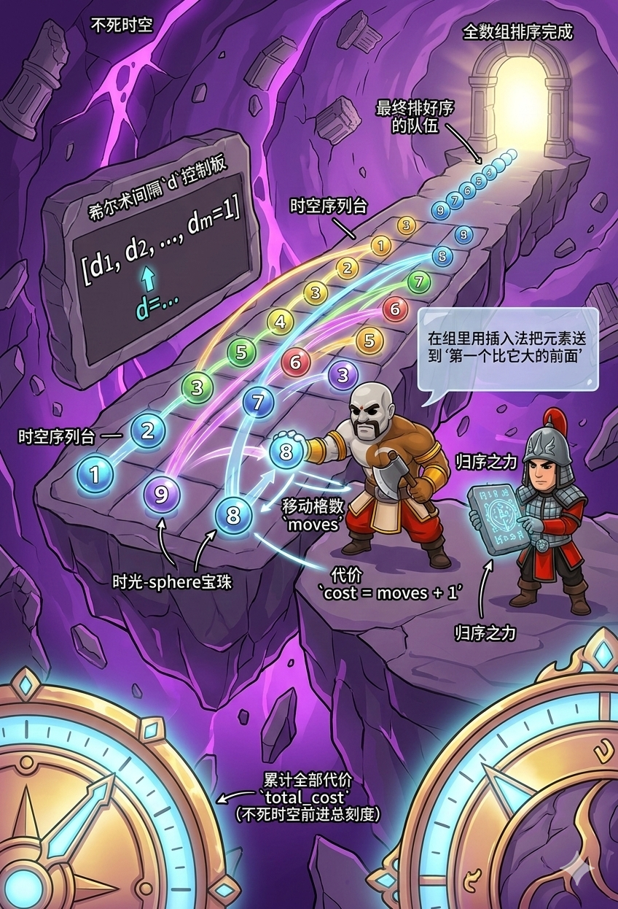

有一排长长的队伍，上面标着数字。你要进行 m 轮“希尔术”排序。每一轮，系统会给你一个魔法间隔 d。

希尔术规则：
题目说得好复杂，什么“移动的格数 + 1”？其实，翻译成魔法术语非常简单：
💡 惊天大秘密： 在一组里面，把一个人插到前面需要移动的格数，恰好等于 “排在他前面，且比他大的数字的数量”！这不就是上一题我们刚学过的 “逆序对 (严格大于)” 吗？！
d 下，把数组按照间隔抽成一个小 vector<int> group，算完代价、排好序后，再按原来的间隔 gap 塞回原数组！long long： 既然是算逆序对，不用说，totalCost 和 inv 必须用 long long，防止时空刻度爆炸！idx = start; for (val : group) { a[idx] = val; idx += gap; } 这段代码就像针线一样，把排好序的组员精准地缝回原来的大队伍里。#include <iostream> #include <vector> #include <algorithm> using namespace std; // 🪚 改装版分治雪锯：归并排序，返回严格逆序对数量，并把数组排好序 long long mergeSort(vector<int>& arr, vector<int>& tmp, int l, int r) { if (l >= r) return 0; int mid = (l + r) / 2; long long inv = mergeSort(arr, tmp, l, mid) + mergeSort(arr, tmp, mid + 1, r); int i = l, j = mid + 1, k = l; while (i <= mid && j <= r) { if (arr[i] <= arr[j]) { // ⚠️ 一定要写 <= ，保持相等元素的稳定顺序！ tmp[k++] = arr[i++]; } else { inv += mid - i + 1; // 左边剩下的都比 arr[j] 大！发现逆序对！ tmp[k++] = arr[j++]; } } while (i <= mid) tmp[k++] = arr[i++]; while (j <= r) tmp[k++] = arr[j++]; for (int p = l; p <= r; ++p) arr[p] = tmp[p]; return inv; } long long sortAndCount(vector<int>& group) { if (group.empty()) return 0; vector<int> tmp(group.size()); return mergeSort(group, tmp, 0, group.size() - 1); } int main() { // ⚡ 加速读入 ios::sync_with_stdio(false); cin.tie(nullptr); int n, m; cin >> n >> m; vector<int> a(n); for (int i = 0; i < n; ++i) cin >> a[i]; vector<int> d(m); for (int i = 0; i < m; ++i) cin >> d[i]; // 读入 m 轮的间隔 gap long long totalCost = 0; // 🌟 总的代价计步器 // ⏳ 开始一轮一轮地进行希尔术！ for (int gap : d) { // start 是每组的起点 (0 到 gap-1) for (int start = 0; start < gap; ++start) { vector<int> group; // 🧶 按照 gap 间隔，把这组的人抽出来！ for (int idx = start; idx < n; idx += gap) { group.push_back(a[idx]); } if (!group.empty()) { // 🪚 算逆序对，并顺便把 group 排序！ long long inv = sortAndCount(group); // 🌟 核心公式：这组的代价 = 逆序对个数 + 这组的人数 totalCost += inv + group.size(); // 🔄 把排好序的人，按照原来的间隔缝回去！ int idx = start; for (int val : group) { a[idx] = val; idx += gap; } } } } // 🎉 输出总代价和最终排好的队伍！ cout << totalCost << '\n'; for (int i = 0; i < n; ++i) { if (i > 0) cout << ' '; cout << a[i]; } cout << '\n'; return 0; }
d 很大，把队伍分成很多组，虽然看起来没排好，但可以让小数字快速“飞”到前面去。最后一轮 d=1，就是普通的插入排序（算逆序对），这时候队伍已经差不多排好了，代价会非常小！<= 保持稳定？ 题目要求是“插入到第一个比它大的元素前面”。如果两个数字一样大，后面那个数字不应该跑到前面那个数字的前面去。所以在归并时，遇到一样的数字（<=），一定要让左边的先放进新数组里！